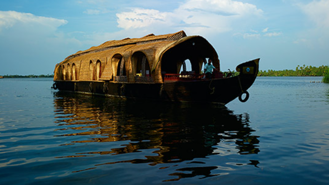
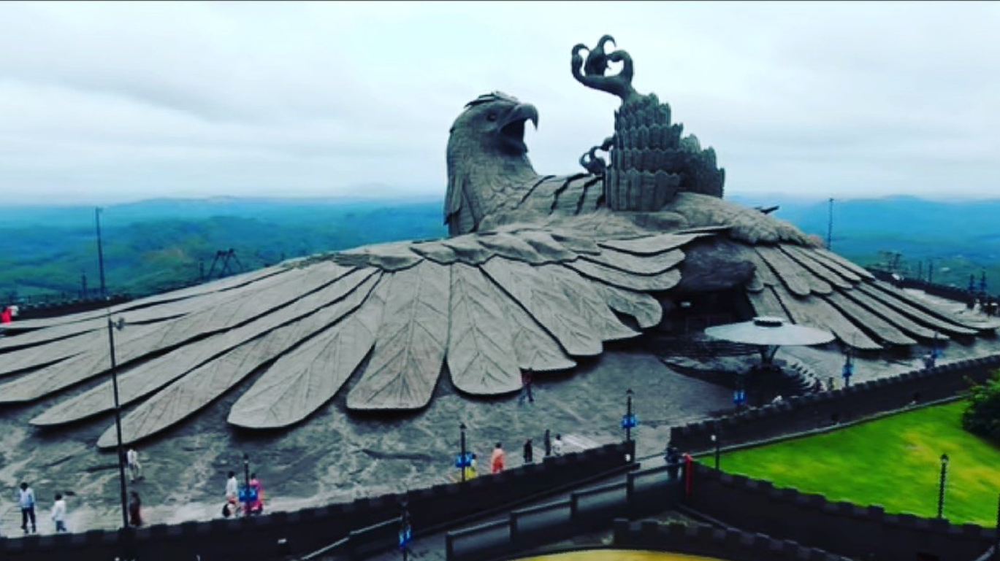
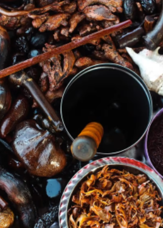
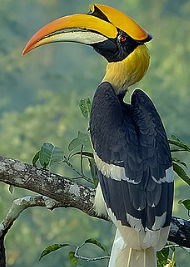
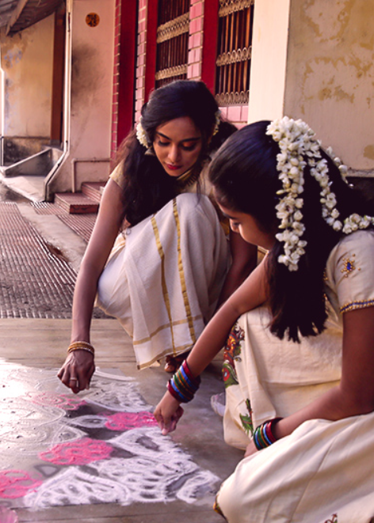
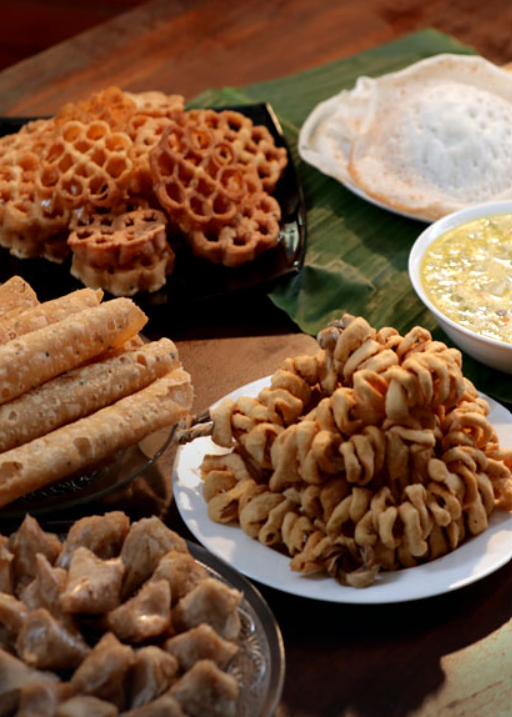

” Kerala, God’s Own Country The Land of Beauty and Wonders!”

“Kerala: A place where your dreams set sail.

A state with lots of coconut trees and the greenery in totality is always soothing to the senses. .
Experience kerala

Backwaters
The scenic backwaters of Kerala comprise serene stretches of lakes, canals and lagoons located parallel to the coast of the Arabian Sea.

Ayurveda
Ayurvedic medicine is one of the world's oldest holistichealing systems. It was developed more than 3,000 years ago in India.

Spices
Kerala is also known as the land of spices. Over the past few centuries, Kerala has secured a favourable position in the global spice market with its variety of spices in terms of both quality & quantity.

Culture
This culture and heritage of Kerala is reflected in its various art forms, martial arts, dresses, the people and cuisine.

Wildlife
The enchanting green forest with elephants, tigers, wild dogs, sambars, gaurs, leopards, as well exotic species of reptiles,land and birds.

Monsoon
Striking a perfect balance between the hilly areas and the coastal region, monsoon in Kerala are majorly of two types.

Festivals
Kerala is host to a plethora of traditional festivals that take place throughout the year. A wide number of regions and communities are involved in these celebrations.

Cuisine
Spices have always played an integral part of Kerala's history. Our food is an example of the very same and we have offerings for people from all over the world.

Hills
Kerala brings to you a magical tryst with nature through its various hills and hill stations. A majority of these places in Kerala are situated on the windward side of the majestic Western Ghats. .